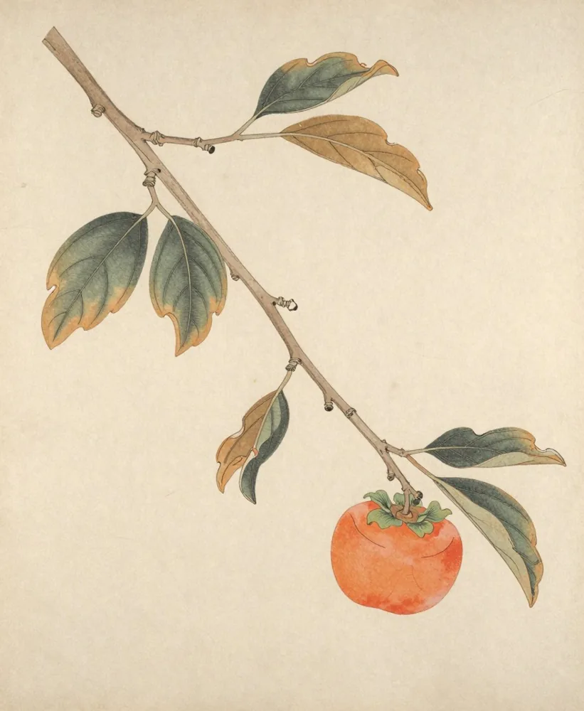
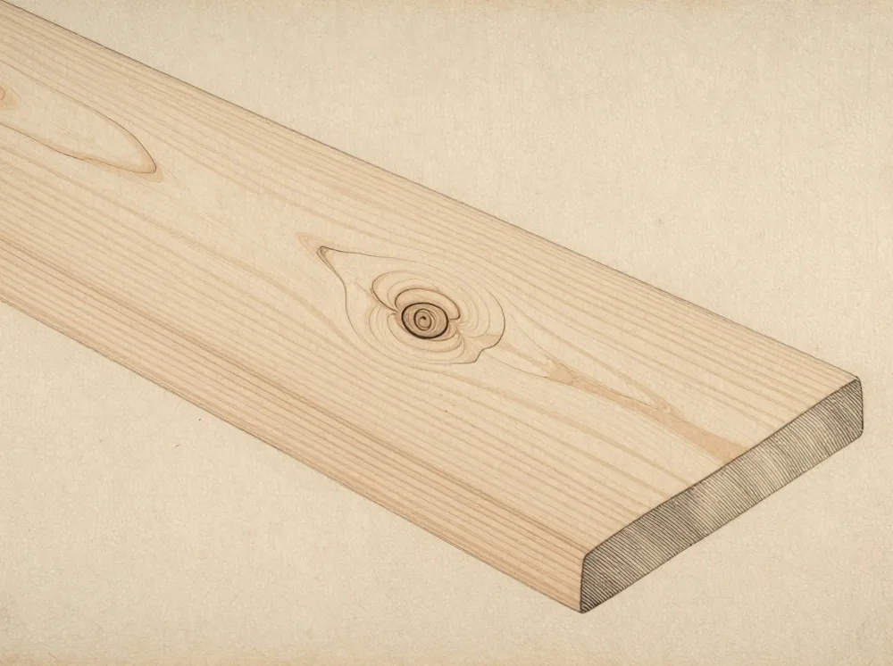
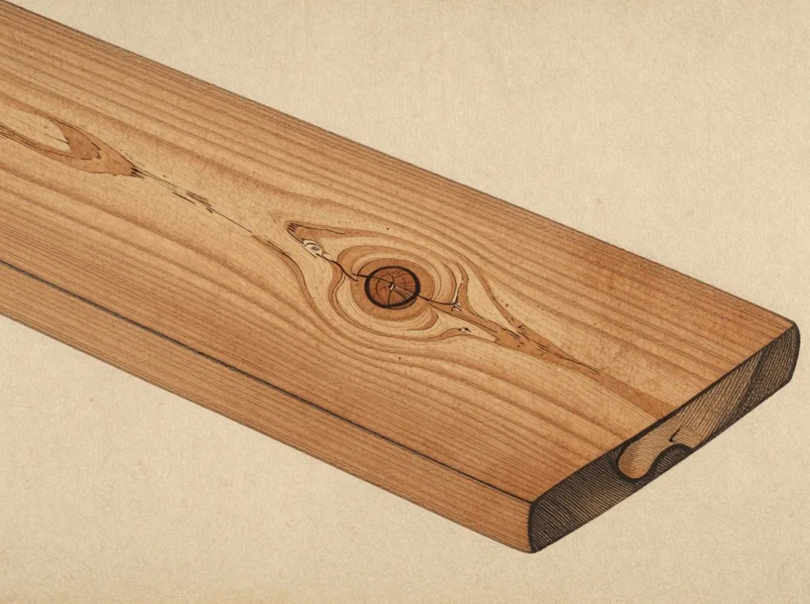
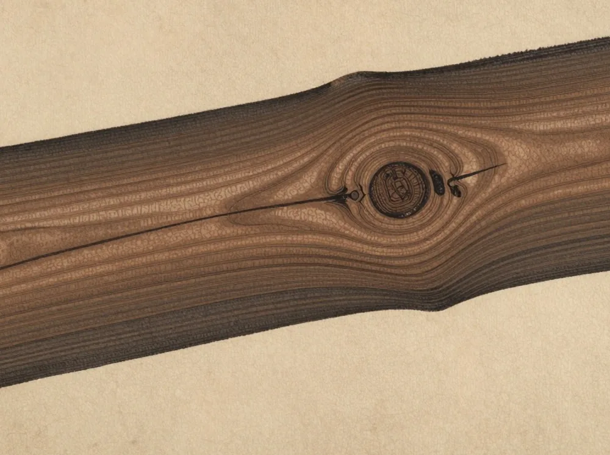
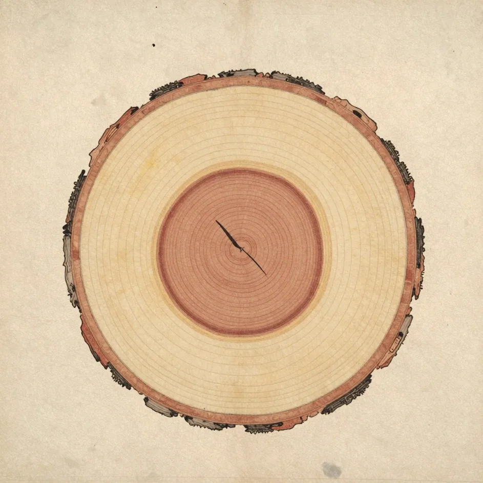

住んでいる家を、見に行く
築1年・10年・30年の家から、住み手の都合のつく一軒を、月に一度お見せしています。新築の完成見学会ではありません。暮らしている家を、暮らしているまま。
毎月第2土曜日 10:00〜15:00（サンプル・架空）
木守工務店 KIMAMORI（サンプル）
家は、建った日から暮らしが始まります。木守は、建てたあとの三十年を、いちばん長い仕事だと考える工務店です。
社名のこと
柿の実を、収穫のときに一つだけ木に残す風習があります。「木守」と呼びます。来年もまた実るように、木に礼を言うように。
家も同じだと、私たちは考えています。建てて終わりにせず、ひとつ、残しておく。それが、このあとの三十年に付き合うということです。

床は杉の無垢。足の裏が少しひやりとして、木がまだ乾ききっていないぶん、建具が時々鳴ります。
一年目の点検は、その「動き」を見る仕事です。戸や引き出しの建て付けを直し、木が落ち着くのを待ちます。

この木の色は、経年を想像して描いたイメージです。
「まだ、木の匂いがします。」
築1年の住み手（架空）
床は白木から飴色に。台所の板の縁は、毎日手が触れるところだけ色が濃くなりました。
十年目は、床下と屋根まわりを見て、手を入れるところを決めます。直すのは、傷んだところだけです。

この木の色は、経年を想像して描いたイメージです。
「子どもが、柱で背を測った跡が残っています。」
築10年の住み手（架空）
梁は黒茶に深まり、磨かれたような艶があります。傷んだのは、縁側の板が二枚。三十年のあいだに直したのは、それだけでした。
木は、手入れをすれば、古びるのではなく、深まります。そう信じて、点検の年表を作っています。

この木の色は、経年を想像して描いたイメージです。
「直したのは、縁側の板を二枚だけです。」
築30年の住み手（架空）

この変化は、木の経年を想像して描いたイメージです。実際の家の記録ではありません。
年数・内容・費用はサンプルです。実際の工務店では、保証内容に合わせて決めます。
築1年・10年・30年の家から、住み手の都合のつく一軒を、月に一度お見せしています。新築の完成見学会ではありません。暮らしている家を、暮らしているまま。
毎月第2土曜日 10:00〜15:00（サンプル・架空）
家づくりのこと、いまの家の手入れのこと。資料請求の前に、まず声を聞かせてください。
電話 000-0000-0000（サンプル） 平日 8:00〜17:00